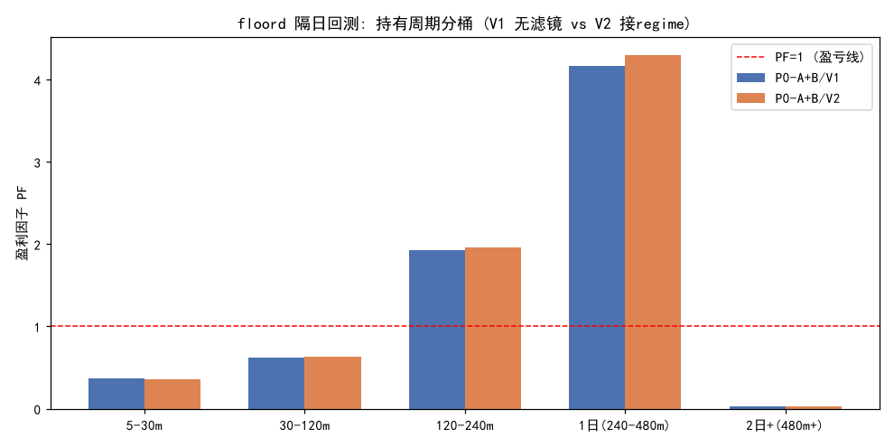

标的=8家族 (2026-04-17~2026-07-16, 61日); 信号=floord_pivot因果K-bar摆点(W=K=5,GAP=3) + miji_alpha指标; 战场=5-∞分钟(个股隔日跨夜 / ETF含日内做T); 入场=确认bar下一bar收盘; 止损=1.5%; 最长持有=3日; 最小持有=5min。
成本: 个股 买0.05%/卖0.10%(含印花税), ETF 买0.05%/卖0.05%。regime: 逐笔|imb|滚动15分, 按该股分布 下30%=calm放行 / 上70%=moved压制(V2仅压制moved); tick覆盖均值 52%(无tick日不压制,仅加不减)。
注: 本回测在分钟级上实现, 属项目 miji 自有信号框架(非通用日级回测); 末日仍持仓记为未实现不计入PF(保守)。
| 变体 | 笔数 | 胜率 | 净额% | 盈利因子PF | Sharpe | 均持有(分) |
|---|---|---|---|---|---|---|
| P0-A+B/V1 | 1137 | 29.8% | -84.05% | 0.88 | -0.04 | 72.9 |
| P0-A+B/V2 | 1058 | 30.0% | -70.47% | 0.89 | -0.03 | 75.4 |
| baseline/V1 | 619 | 25.5% | -12.84% | 0.97 | -0.01 | 84.7 |
| baseline/V2 | 584 | 25.7% | -8.69% | 0.98 | -0.01 | 85.6 |
| 持有桶 | V1 (a+c 无滤镜) | V2 (a+b+c 接regime) | ||||||
|---|---|---|---|---|---|---|---|---|
| 笔数 | 胜率 | 净额% | PF | 笔数 | 胜率 | 净额% | PF | |
| 5-30m | 543 | 21% | -168.86% | 0.37 | 488 | 20% | -161.35% | 0.36 |
| 30-120m | 237 | 36% | -76.69% | 0.62 | 225 | 38% | -70.30% | 0.63 |
| 120-240m 日内长swing | 210 | 47% | +132.73% | 1.92 | 206 | 47% | +133.41% | 1.96 |
| 1日(240-480m) | 56 | 52% | +71.35% | 4.16 | 54 | 52% | +72.02% | 4.30 |
| 2日+(480m+) | 6 | 17% | -3.32% | 0.03 | 6 | 17% | -3.32% | 0.03 |
| 标的 | 名称 | 模型 | V1 | V2 | tick覆盖 |
|---|---|---|---|---|---|
| 600519.SH | 贵州茅台 | bidirectional | 46/46%/-12.58%/0.57 | 45/49%/-8.09%/0.69 | 45% |
| 000001.SZ | 平安银行 | bidirectional | 49/39%/-12.92%/0.51 | 48/40%/-13.15%/0.50 | 43% |
| 300750.SZ | 宁德时代 | bidirectional | 83/34%/-25.66%/0.66 | 84/35%/-24.81%/0.68 | 41% |
| 600036.SH | 招商银行 | bidirectional | 38/42%/-9.52%/0.55 | 38/39%/-10.45%/0.51 | 41% |
| 688347.SH | 华虹公司 | bidirectional | 141/26%/+64.41%/1.38 | 137/26%/+67.39%/1.41 | 42% |
| 603659.SH | 璞泰来 | bidirectional | 99/29%/-50.52%/0.52 | 99/29%/-50.72%/0.52 | 43% |
| 513310.SH | 中韩半导体ETF | longonly | 384/25%/-3.26%/0.98 | 341/25%/+1.17%/1.01 | 68% |
| 161129.SZ | 原油LOF | longonly | 297/32%/-34.01%/0.70 | 266/31%/-31.79%/0.71 | 94% |
| 标的 | IS 笔数/净额%/PF | OOS 笔数/净额%/PF |
|---|---|---|
| 600519.SH | 19/-5.84%/0.46 | 27/-6.74%/0.63 |
| 000001.SZ | 19/-5.79%/0.40 | 30/-7.12%/0.56 |
| 300750.SZ | 41/-5.76%/0.82 | 42/-19.89%/0.55 |
| 600036.SH | 12/-1.32%/0.74 | 26/-8.20%/0.49 |
| 688347.SH | 55/+58.28%/1.96 | 86/+6.12%/1.06 |
| 603659.SH | 49/-28.01%/0.48 | 50/-22.51%/0.55 |
| 513310.SH | 229/+13.99%/1.22 | 155/-17.25%/0.77 |
| 161129.SZ | 149/-24.01%/0.59 | 148/-10.00%/0.82 |
| 入场regime | 笔数 | 胜率 | 净额% | 盈利因子PF |
|---|---|---|---|---|
| calm | 242 | 30% | -18.45% | 0.86 |
| neutral | 280 | 31% | -75.19% | 0.53 |
| moved | 151 | 36% | +9.26% | 1.14 |
| n/a | 464 | 27% | +0.33% | 1.00 |
若 calm/neutral 组 PF > moved 组, 则"高失衡=已动过=后续平静"假设成立, (b)滤镜方向正确(压制moved入场可增益)。
